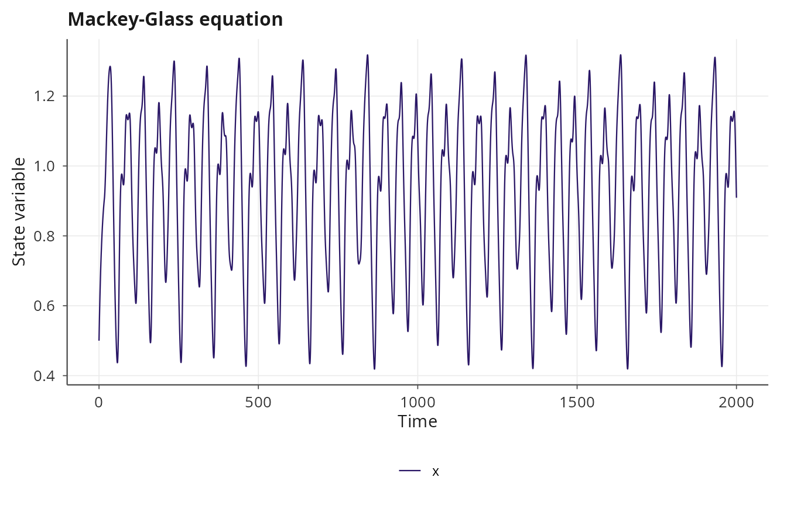
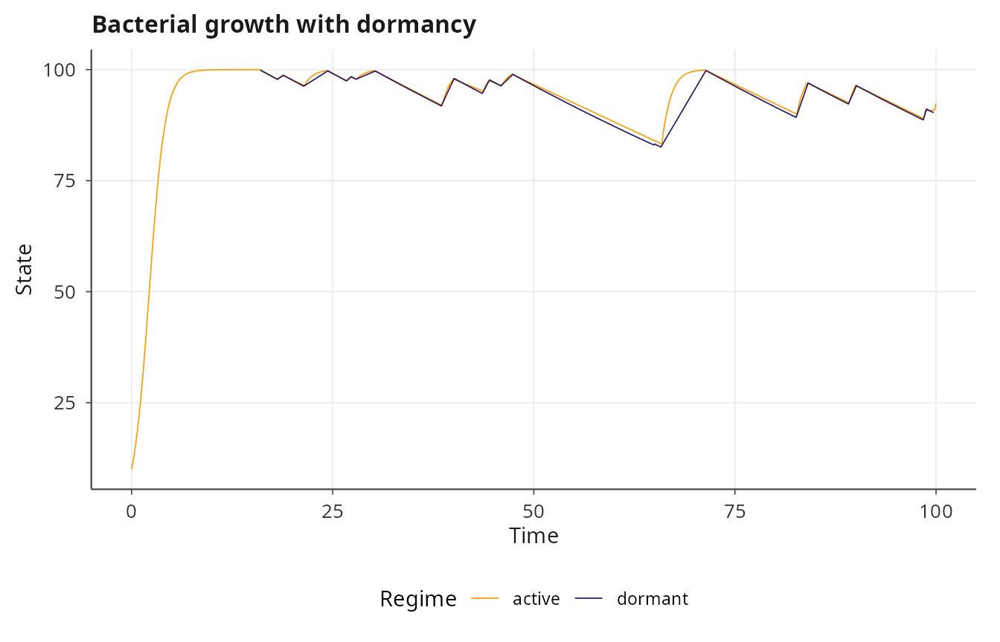
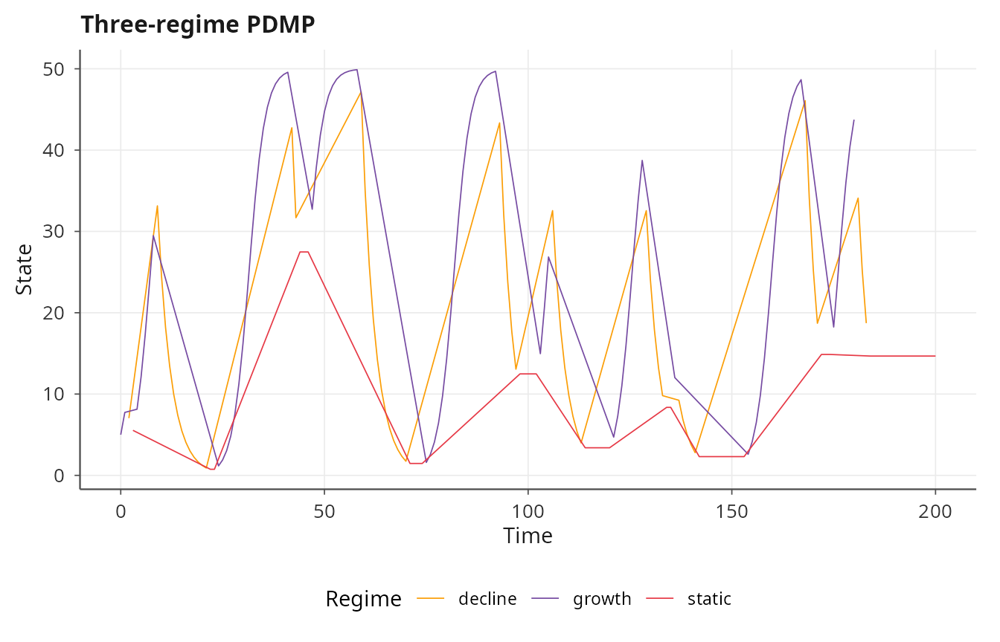
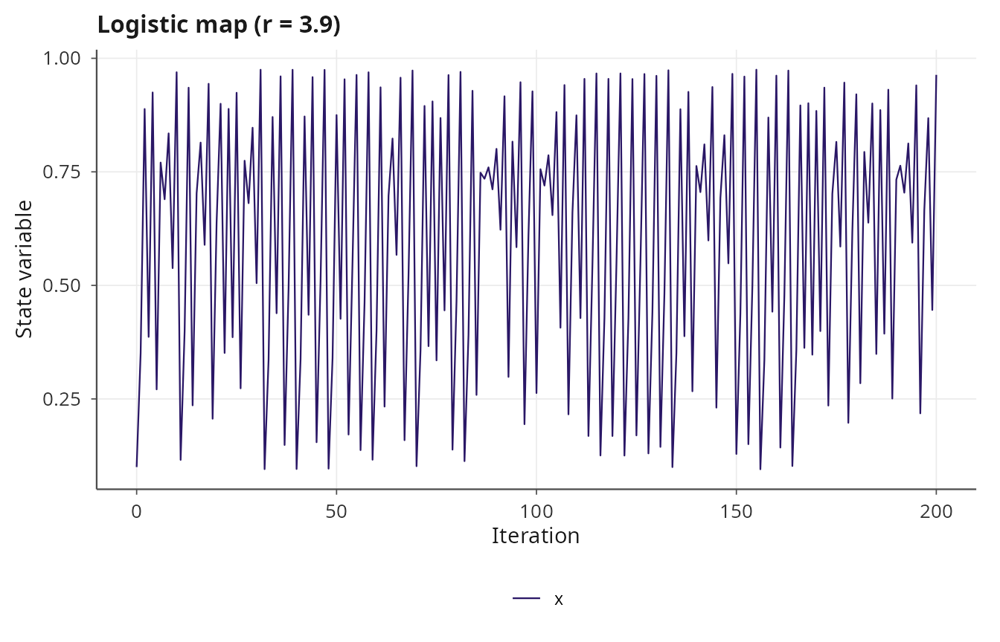
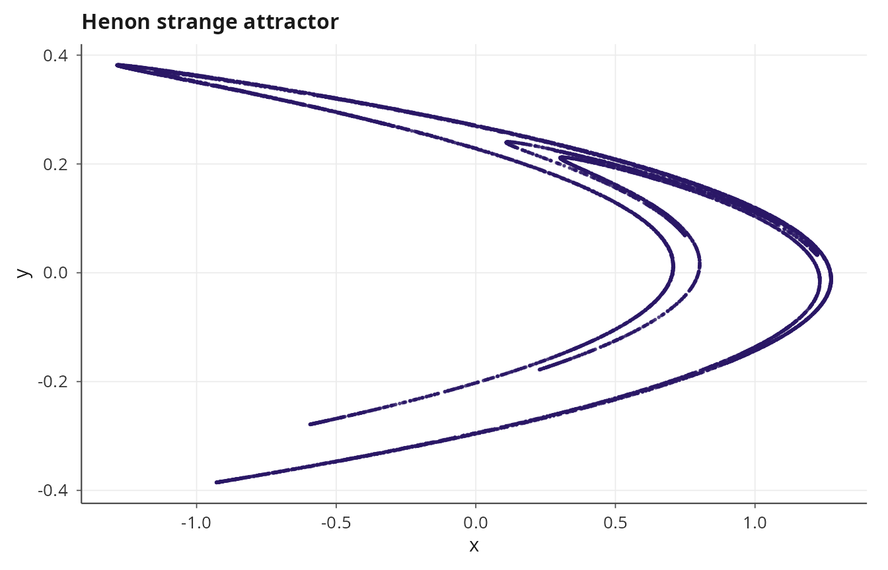
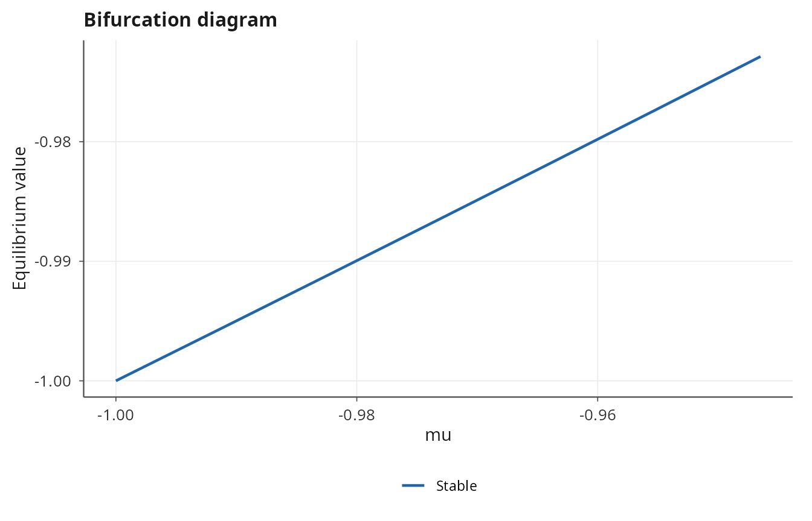
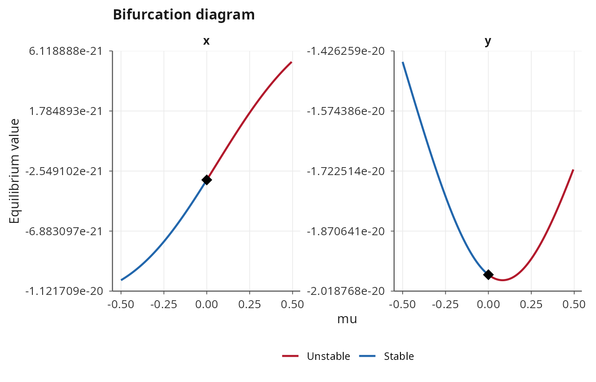
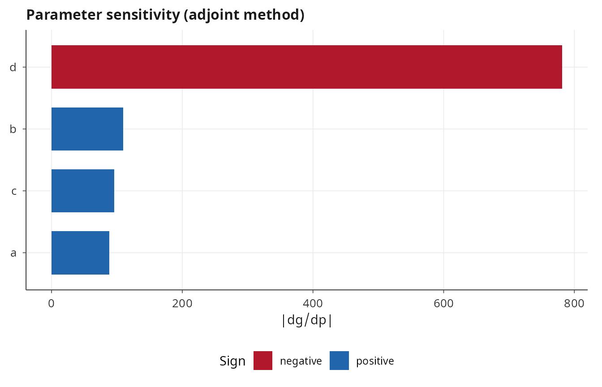

Advanced dynamics: DDE, PDMP, maps, and analysis tools
Pablo Almaraz, RElab
2026-05-04
Source:vignettes/advanced-dynamics.Rmd
advanced-dynamics.RmdOverview
Beyond ODEs, CTMCs, SDEs, and PDEs, janos supports three further classes of dynamics: delay differential equations (DDE) for systems with memory, piecewise deterministic Markov processes (PDMP) for hybrid continuous-discrete dynamics, and discrete-time maps for iterated systems. This vignette demonstrates each of these model types and then covers the analytical tools available for post-simulation investigation: equilibrium finding, bifurcation continuation, and adjoint sensitivity analysis.
Delay differential equations
Delay differential equations incorporate dependence on past states, \(\dot{x}(t) = f(x(t), x(t - \tau))\), and arise naturally in population dynamics (maturation delays), control theory (feedback latency), and epidemiology (incubation periods). janos implements DDE integration via RK4 with a circular history buffer and cubic Hermite interpolation for evaluating the state at arbitrary past times.
Mackey-Glass equation
The Mackey-Glass equation [1] is a classical DDE that exhibits a transition from limit cycles to chaos as the delay \(\tau\) increases:
\[\dot{x}(t) = \frac{a \, x(t - \tau)}{1 + x(t - \tau)^c} - b \, x(t)\]
mg <- model_spec(
rhs = list(x ~ a * x_delay / (1 + x_delay^c) - b * x),
delays = list(x_delay = list(state = "x", tau = 17.0)),
state_names = "x",
parms = list(a = 0.2, b = 0.1, c = 10),
init = c(x = 0.5)
)
result_mg <- dyn_sim(mg, t_max = 2000, solver = solver_dde(dt = 0.1),
discard_transient = 500)
#> ⚙ Simulating DDE system (compiled DDE)
#> ¡ Integration: RK4, dt = 0.1, τ_max = 17
#> ¡ Duration: 2000, discarding 500 transient
#> ⏱ Elapsed: 0.04 seconds
#> ✔ Simulation complete: 20001 time points, 15001 on attractor
print(result_mg)
#>
#> Dynamical system simulation
#> ---------------------------
#>
#> System type: autonomous
#>
#> Solver: DDE (dt = 0.100)
#> Simulation: t_max = 2000.0, discarding 500.0 transient
#> Attractor points: 15001
#>
#> State variables on attractor (mean ± sd):
#> x: 0.9309 ± 0.2255
plot(result_mg, title = "Mackey-Glass equation")
The delays argument is a named list where each element
specifies which state variable is delayed and by how much. The delayed
value is made available as a new symbol (x_delay) in the
RHS formulas, and the compiler resolves it through the history buffer.
Multiple delays on different state variables or at different lag times
are supported.
Piecewise deterministic Markov processes
A PDMP [2] evolves deterministically between random events that switch the system between different dynamical regimes. The flow within each regime is governed by its own ODE, while the transitions between regimes are driven by inhomogeneous Poisson processes with state-dependent rates. janos simulates PDMPs by integrating the current regime with RK4 and using Lewis-Shedler thinning to determine when transitions occur.
Bacterial growth and dormancy
Consider a bacterial population that switches between active growth and dormancy. In the active regime, the population grows logistically; in the dormant regime, it decays slowly. The transition from active to dormant increases with population density (a stress response), while the transition back to active occurs at a constant rate.
bacteria <- model_spec(
regimes = list(
active = list(N ~ r * N * (1 - N / K)),
dormant = list(N ~ -d * N)
),
transitions = list(
list(from = "active", to = "dormant", rate = ~ lambda_ad * N / K),
list(from = "dormant", to = "active", rate = ~ lambda_da)
),
initial_regime = "active",
state_names = "N",
parms = list(r = 1.0, K = 100, d = 0.01,
lambda_ad = 0.5, lambda_da = 0.2),
init = c(N = 10)
)
result_pdmp <- dyn_sim(bacteria, t_max = 100,
solver = solver_pdmp(dt_ode = 0.01, output_dt = 0.1,
seed = 42),
discard_transient = 0)
#> ⚙ Simulating PDMP system (PDMP, 2 regimes)
#> ¡ dt_ode = 0.01, seed = 42
#> ¡ Duration: 100, discarding 0 transient
#> ¡ Initial regime: active
#> ⏱ Elapsed: 0.01 seconds
#> ✔ Simulation complete: 1001 time points, 26 regime transitions
print(result_pdmp)
#>
#> Dynamical system simulation
#> ---------------------------
#>
#> System type: autonomous
#>
#> Solver: PDMP (dt = 0.01)
#> Simulation: t_max = 100.0, discarding 0.0 transient
#> Attractor points: 1001
#>
#> State variables on attractor (mean ± sd):
#> N: 93.0035 ± 11.6415
plot(result_pdmp, title = "Bacterial growth with dormancy")
The output trajectory includes a regime column
(character) indicating which regime is active at each time point. The
plot automatically color-codes the trajectory by regime.
Multi-regime PDMP
PDMPs are not limited to two regimes. Any number of regimes can be defined, each with its own set of ODE formulas, and transitions can connect any pair of regimes:
three_regime <- model_spec(
regimes = list(
growth = list(x ~ a * x * (1 - x / K)),
decline = list(x ~ -b * x),
static = list(x ~ 0)
),
transitions = list(
list(from = "growth", to = "decline", rate = ~ r1),
list(from = "decline", to = "static", rate = ~ r2),
list(from = "static", to = "growth", rate = ~ r3)
),
initial_regime = "growth",
state_names = "x",
parms = list(a = 0.5, K = 50, b = 0.3, r1 = 0.1, r2 = 0.2, r3 = 0.15),
init = c(x = 5)
)
result_3r <- dyn_sim(three_regime, t_max = 200,
solver = solver_pdmp(dt_ode = 0.01, seed = 7),
discard_transient = 0)
#> ⚙ Simulating PDMP system (PDMP, 3 regimes)
#> ¡ dt_ode = 0.01, seed = 7
#> ¡ Duration: 200, discarding 0 transient
#> ¡ Initial regime: growth
#> ⏱ Elapsed: 0.01 seconds
#> ✔ Simulation complete: 201 time points, 29 regime transitions
plot(result_3r, title = "Three-regime PDMP")
Discrete maps
Discrete-time iterated maps \(x_{n+1} =
F(x_n)\) are a fundamental object in dynamical systems theory,
exhibiting period-doubling cascades, strange attractors, and sensitive
dependence on initial conditions in low-dimensional settings. janos
compiles map formulas to C++ and iterates them with
solver_map().
Logistic map
The logistic map \(x_{n+1} = r x_n (1 - x_n)\) undergoes a period-doubling route to chaos as \(r\) increases toward 4:
logistic <- model_spec(
map = list(x ~ r * x * (1 - x)),
state_names = "x",
parms = list(r = 3.9),
init = c(x = 0.1)
)
result_log <- dyn_sim(logistic, t_max = 200, solver = solver_map(),
discard_transient = 50)
#> ⚙ Iterating Discrete map (compiled)
#> ¡ Iterations: 200, discarding 50 transient
#> ⏱ Elapsed: 0.01 seconds
#> ✔ Simulation complete: 201 iterations stored, 151 on attractor
print(result_log)
#>
#> Dynamical system simulation
#> ---------------------------
#>
#> System type: autonomous
#>
#> Solver: MAP (discrete iteration)
#> Simulation: 200 iterations, discarding 50 transient
#> Attractor points: 151
#>
#> State variables on attractor (mean ± sd):
#> x: 0.6000 ± 0.2966
plot(result_log, title = "Logistic map (r = 3.9)")
The t_max argument for maps specifies the number of
iterations (not continuous time), and discard_transient
removes the initial iterations before the attractor is reached.
Henon map
The Henon map is a two-dimensional invertible map that produces one of the most studied strange attractors:
\[x_{n+1} = 1 - a x_n^2 + y_n, \quad y_{n+1} = b x_n\]
henon <- model_spec(
map = list(
x ~ 1 - a * x^2 + y,
y ~ b * x
),
state_names = c("x", "y"),
parms = list(a = 1.4, b = 0.3),
init = c(x = 0, y = 0)
)
result_henon <- dyn_sim(henon, t_max = 10000, solver = solver_map(),
discard_transient = 1000)
#> ⚙ Iterating Discrete map (compiled)
#> ¡ Iterations: 10000, discarding 1000 transient
#> ⏱ Elapsed: 0.01 seconds
#> ✔ Simulation complete: 10001 iterations stored, 9001 on attractor
plot(result_henon, type = "phase", title = "Henon strange attractor")
All states are updated simultaneously, which is the correct semantics for maps (the new \(x\) and new \(y\) are computed from the old values, not sequentially).
Equilibrium finding
The equilibrium() function locates steady states \(f(y^*, p) = 0\) of an ODE system using
Newton’s method with the symbolically compiled Jacobian. The equilibrium
is classified by the eigenvalues of the Jacobian evaluated at the fixed
point: stable nodes, unstable nodes, saddle points, stable foci,
unstable foci, and centers.
lv <- model_spec(
rhs = list(x ~ a * x - b * x * y, y ~ d * x * y - c * y),
state_names = c("x", "y"),
parms = list(a = 1.0, b = 0.1, d = 0.075, c = 1.5),
init = c(x = 20, y = 10)
)
eq <- equilibrium(lv)
print(eq)
#>
#> Equilibrium point
#> ----------------------------------------
#>
#> State:
#> x = 20.000000
#> y = 10.000000
#>
#> Classification: center
#> Stable: FALSE
#> Residual: 0.00e+00
#> Newton iterations: 0
#>
#> Eigenvalues:
#> lambda_1 = 0.000000 + 1.224745i
#> lambda_2 = 0.000000 - 1.224745i
summary(eq)
#>
#> Summary: equilibrium point
#> ==================================================
#>
#> State:
#> x = 20.00000000
#> y = 10.00000000
#>
#> Classification: center
#> Stable: FALSE
#> Residual: 0.00e+00
#> Jacobian condition number: 2.21e+00
#>
#> Eigenvalue spectrum:
#> index real imaginary modulus
#> 1 0 1.22474 1.22474
#> 2 0 -1.22474 1.22474The init_guess argument can steer Newton’s method toward
a particular equilibrium when multiple fixed points exist. For the
Lotka-Volterra system the nontrivial equilibrium is a center (purely
imaginary eigenvalues), reflecting the conservative nature of the
dynamics.
Bifurcation continuation
Continuation traces how an equilibrium moves and changes stability as a parameter varies, using the pseudo-arclength method [3]. The algorithm starts from a known equilibrium and takes steps along the solution branch in a combined state-parameter space, detecting fold bifurcations (where the branch turns back) and Hopf bifurcations (where a pair of complex eigenvalues crosses the imaginary axis).
# Two-dimensional system with a fold bifurcation
fold_model <- model_spec(
rhs = list(x ~ mu + x^2),
state_names = "x",
parms = list(mu = -1),
init = c(x = 1)
)
# Find starting equilibrium at mu = -1
eq_start <- equilibrium(fold_model, init_guess = c(x = -1.5),
parms = list(mu = -1))
# Continue the branch from mu = -1 to mu = 1
bif <- continuation(fold_model, par_name = "mu", par_range = c(-1, 1),
init_eq = eq_start, ds = 0.01)
#> Continuation: mu in [-1, 1], ds = 0.01
#> Corrector failed at step 7 (mu = -0.937593). Stopping.
#> Completed: 7 points, 0 bifurcations
print(bif)
#>
#> Bifurcation continuation
#> ----------------------------------------
#>
#> Parameter: mu
#> Range: [-1, 1]
#> Actual range: [-1, -0.9465]
#> Step size: 0.01
#> Branch points: 7
#> Stable: 7, Unstable: 0
#>
#> No bifurcations detected.
summary(bif)
#>
#> Summary: bifurcation continuation
#> ==================================================
#>
#> Parameter: mu
#> Range traversed: [-1, -0.946483]
#> Branch points: 7
#> Fraction stable: 100.0%
#>
#> State variable ranges along branch:
#> variable min max
#> x -1 -0.972873
#>
#> Eigenvalue real-part ranges:
#> eigenvalue min_re max_re
#> lambda_1 -2 -1.94575
plot(bif)
The continuation plot shows the equilibrium value of \(x\) against the parameter \(\mu\), with stability indicated by line type and bifurcation points marked. For the fold normal form \(\dot{x} = \mu + x^2\), the stable branch \(x = -\sqrt{-\mu}\) exists for \(\mu < 0\) and disappears via a saddle-node bifurcation at \(\mu = 0\). The pseudo-arclength algorithm traces the stable branch from the starting equilibrium toward the fold point; near the fold, the Jacobian becomes singular and the corrector may fail, so the branch may terminate before reaching the exact bifurcation value.
Hopf bifurcation detection
The continuation algorithm also detects Hopf bifurcations, which occur when a pair of complex conjugate eigenvalues crosses the imaginary axis. Consider a model with a supercritical Hopf bifurcation:
hopf_model <- model_spec(
rhs = list(
x ~ mu * x - y - x * (x^2 + y^2),
y ~ x + mu * y - y * (x^2 + y^2)
),
state_names = c("x", "y"),
parms = list(mu = -0.5),
init = c(x = 0.1, y = 0.1)
)
eq_hopf <- equilibrium(hopf_model, parms = list(mu = -0.5))
bif_hopf <- continuation(hopf_model, par_name = "mu", par_range = c(-0.5, 0.5),
init_eq = eq_hopf, ds = 0.005)
#> Continuation: mu in [-0.5, 0.5], ds = 0.005
#> step 100: mu = -0.005, stable = TRUE
#> hopf bifurcation detected at mu = -3.05176e-07
#> step 200: mu = 0.495, stable = FALSE
#> Completed: 200 points, 1 bifurcations
plot(bif_hopf)
Adjoint sensitivity analysis
For ODE models, the continuous adjoint method [4]
computes the gradient of a scalar objective with respect to all model
parameters in a single backward integration, regardless of the number of
parameters. This is far more efficient than finite-difference
sensitivity analysis when the parameter dimension is large. The
adjoint_sensitivity() function performs a forward
simulation to obtain the trajectory, then integrates the adjoint
equation backward in time using the Pontryagin minimum principle.
lv <- model_spec(
rhs = list(x ~ a * x - b * x * y, y ~ d * x * y - c * y),
state_names = c("x", "y"),
parms = list(a = 1.0, b = 0.1, d = 0.075, c = 1.5),
init = c(x = 40, y = 9)
)
sens <- adjoint_sensitivity(lv, objective = "terminal", t_max = 10)
#> ⚙ Adjoint sensitivity for ODE system
#> ¡ Forward pass: RK45, t_max = 10
#> ¡ Compiling adjoint solver (J^T + df/dp)
#> ¡ Backward pass: RK4, 1000 checkpoints
#> ⏱ Elapsed: 0.03 seconds
#> ✔ Sensitivity complete. Top: d = -781.4, b = 109.4, c = 95.84
print(sens)
#>
#> Adjoint sensitivity analysis
#> ----------------------------
#>
#> Objective value: 29.2305
#> Duration: 10, 1000 checkpoints
#>
#> Parameter gradients (dg/dp):
#> a = 88.0639 (elasticity: 3.013 )
#> b = 109.416 (elasticity: 0.374 )
#> d = -781.387 (elasticity: -2.005 )
#> c = 95.8441 (elasticity: 4.918 )
#>
#> Elapsed: 0.03 seconds
summary(sens)
#>
#> Adjoint sensitivity analysis (summary)
#> =======================================
#>
#> Objective value: 29.2305
#> Duration: 10
#> Checkpoints: 1000
#> States: x, y
#> Parameters: 4
#>
#> Parameter sensitivity table:
#> Parameter Value Gradient Elasticity
#> -------------------------------------------------------
#> a 1 88.06 3.0127
#> b 0.1 109.4 0.3743
#> d 0.075 -781.4 -2.0049
#> c 1.5 95.84 4.9184
#>
#> Ranked by |gradient| (most sensitive first):
#> d : -781.4
#> b : 109.4
#> c : 95.84
#> a : 88.06
#>
#> Elapsed: 0.03 seconds
plot(sens)
The objective = "terminal" option computes the
sensitivity of the terminal state with respect to each parameter. The
sensitivity_result object contains the gradient vector and
relative sensitivity (normalized by parameter magnitude), which
identifies which parameters most strongly influence the outcome.
References
[1] Mackey, M. C., & Glass, L. (1977). Oscillation and chaos in physiological control systems. Science, 197(4300), 287-289. doi:10.1126/science.267326
[2] Davis, M. H. A. (1984). Piecewise-deterministic Markov processes: a general class of non-diffusion stochastic models. Journal of the Royal Statistical Society: Series B, 46(3), 353-388. doi:10.1111/j.2517-6161.1984.tb01308.x
[3] Keller, H. B. (1977). Numerical solution of bifurcation and nonlinear eigenvalue problems. In P. H. Rabinowitz (Ed.), Applications of Bifurcation Theory (pp. 359-384). Academic Press. ISBN: 978-0-12-574650-5.
[4] Pontryagin, L. S., Boltyanskii, V. G., Gamkrelidze, R. V., & Mishchenko, E. F. (1962). The Mathematical Theory of Optimal Processes. Wiley. ISBN: 978-2-88124-077-5.